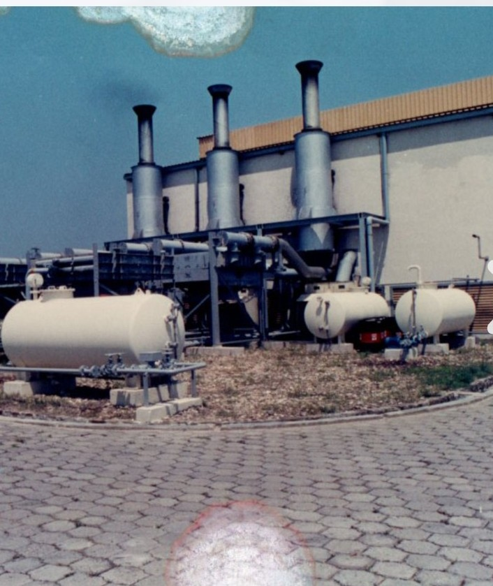
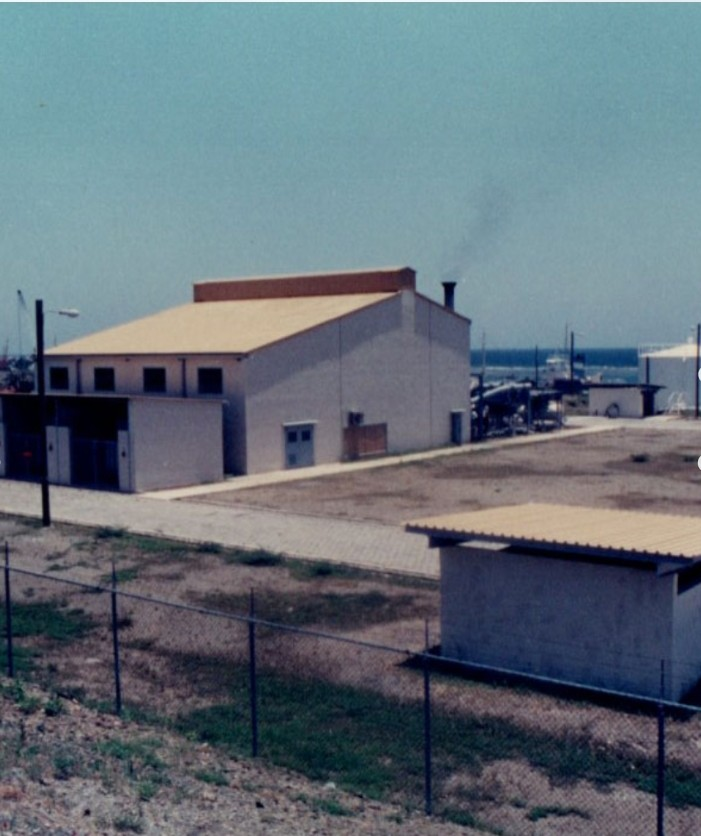
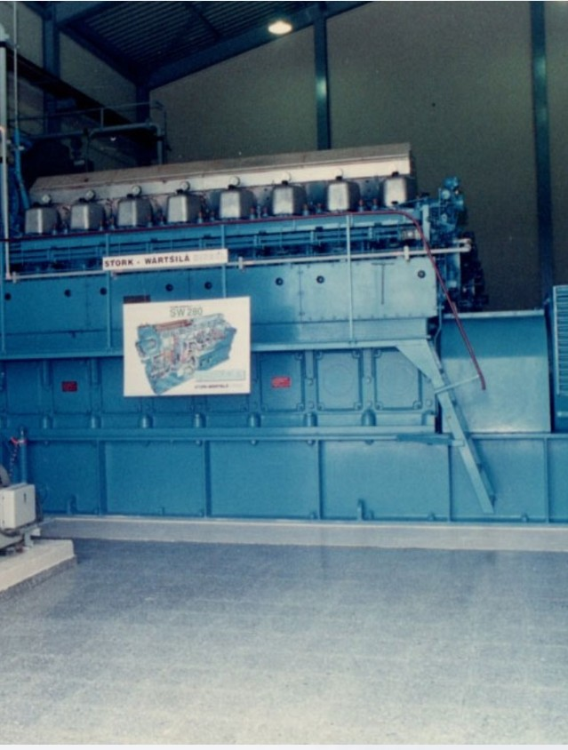
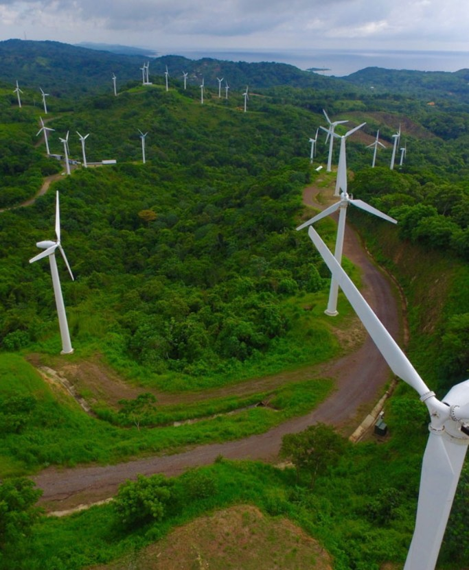
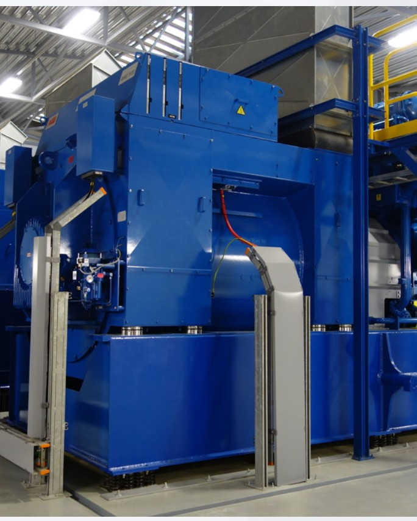
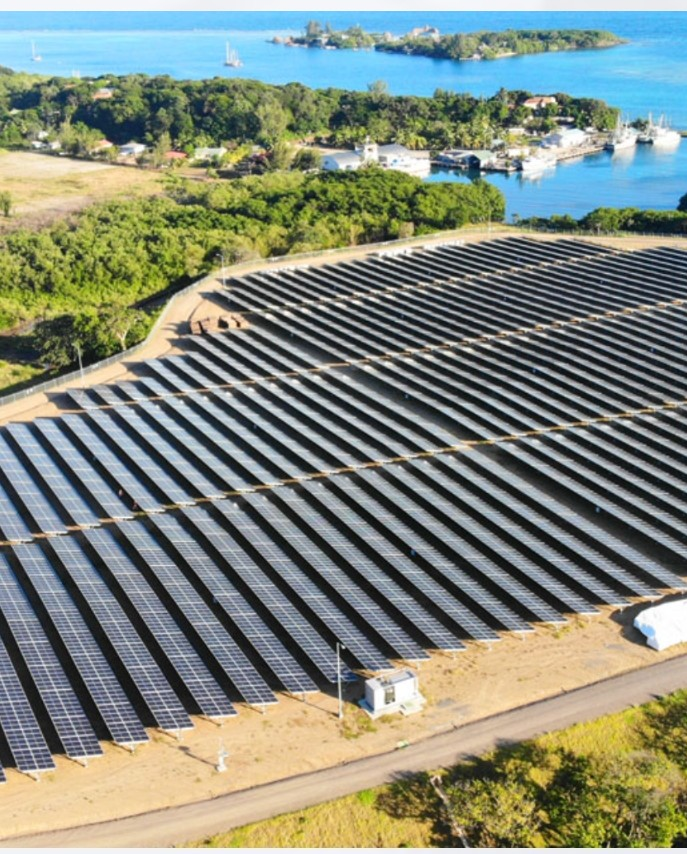
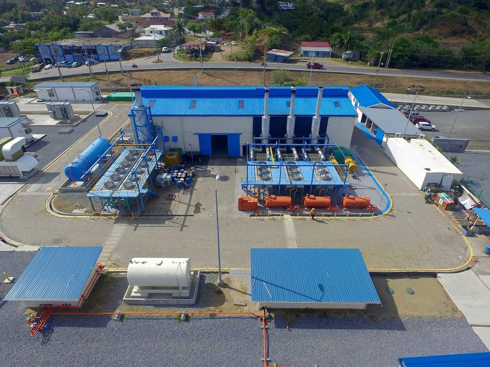

Roatán Electric Company, (RECO), es la empresa de servicio de energía para la isla turística de Roatán, Islas de la Bahía, ubicada en la costa norte de Honduras. RECO ofrece el servicio de generación y distribución a la isla con mayor atractivo turístico en el país
brindando el servicio a los municipios de Roatán y Santos Guardiola.
La isla es un destino turístico apreciada y conocida por su belleza tropical,
con una diversidad natural por su fauna marina, arrecifes y con una población de más de 60,000 habitantes.
Roatán Electric Company nace en 1992, momento en que la empresa fue administrada y liderada por la comunidad local,
bajo acuerdo y traspaso del congreso de la República de Honduras. Es en el 2007 cuando se realiza la intervención por parte de la empresa nacional de energía eléctrica y es así como en el 2008,
la empresa asume una nueva administración.
Con ello la empresa inicia un proceso de gran inversión y crecimiento en los sistemas de generación y distribución;
desde luego, el consecuente desarrollo del motor productivo y comercial de toda la isla.



En el 2017, la empresa inauguró la planta de energía a base de LPG, siendo un novedoso sistema de generación, tecnológico y amigable con el medio ambiente brindando una capacidad instalada de 28 megavatios.
Entre otro de los proyectos la empresa cuenta con el parque eólico de Trade Winds Energy,
ubicado en la zona de Brass Hill que proporciona una generación de 3.9 MW.
Con una transición en la generación de energía limpia RECO integra nuevos proyectos de energía renovables a la matriz energética,
recientemente cuenta con la operatividad del primer parque solar
con una generación de 7 MW, proyecto de energía con la más alta tecnología integrando un sistema de baterías de almacenamiento GEMS.
Próximamente se integrará el segundo parque que aportará con mayor generación de energía.
Las inversiones de la empresa han logrado una capacidad instalada de generación evolucionara de 6.6 megawatts en 1993, a 41 megawatts en 2018,
diversificando en sus proyectos de generación de energía para el bienestar de la isla.
Con más de 29 años de servicio en la isla, RECO, avanza con una generación de energía limpia contribuyendo con la protección del medio ambiente y
aportando con un servicio de calidad a los usuarios de Roatán.




Nuestro Valores
1. Seguridad Laboral: Administrar la empresa bajo una seguridad laboral adecuada con el objetivo de tener cero accidentes y cero incidentes con nuestros empleados y clientes.
2.Conciencia Ambiental: RECO es una empresa amigable con el medio ambiente, integrando sistemas de generación de energía limpia reduciendo las emisiones de CO2 contribuyendo
con el cuidado y preservación del medio ambiente.
3.Honestidad: La empresa y sus empleados son transparentes con todas sus acciones con respeto a la Ley,
los clientes y los proveedores.
4.Integridad: RECO y sus empleados son consistentes con acciones, valores, métodos, medidas y principios.
5.Satisfacción al Cliente: La empresa coloca a sus clientes como su máxima prioridad; cada esfuerzo de la empresa y
sus empleados están orientados para satisfacer a nuestros clientes.